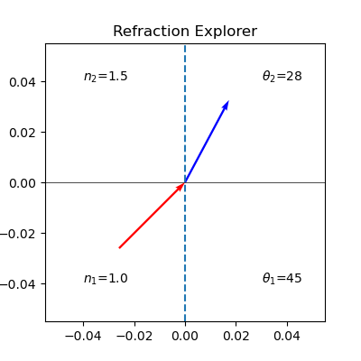

This page was generated from `source/snippets/Refraction Explorer.ipynb`_.

EXP3 Snippets – Refraction Explorer¶
This is a small python code snippet, which you can explore on the myBinder service with the button on the top of this webpage. It shows the refraction of a light ray (red) incident to an interface (horizontal line), which is then refracted. The interface is seperating two areas with different refractive index \(n_1, n_2\), which you can modify with the sliders in the same way as the incident angle. The refractive index \(n_2\) may even go negative and you may want to explore what happens then.
Cichos 2020
[1]:
%matplotlib widget
import ipywidgets as widgets
import matplotlib.pyplot as plt
import numpy as np
[2]:
def magnitude(vector):
return np.sqrt(np.dot(np.array(vector),np.array(vector)))
def norm(vector):
return np.array(vector)/magnitude(np.array(vector))
def lineRayIntersectionPoint(rayOrigin, rayDirection, point1, point2):
# Convert to numpy arrays
rayOrigin = np.array(rayOrigin, dtype=np.float)
rayDirection = np.array(norm(rayDirection), dtype=np.float)
point1 = np.array(point1, dtype=np.float)
point2 = np.array(point2, dtype=np.float)
# Ray-Line Segment Intersection Test in 2D
# http://bit.ly/1CoxdrG
v1 = rayOrigin - point1
v2 = point2 - point1
v3 = np.array([-rayDirection[1], rayDirection[0]])
t1 = np.cross(v2, v1) / np.dot(v2, v3)
t2 = np.dot(v1, v3) / np.dot(v2, v3)
if t1 >= 0.0 and t2 >= 0.0 and t2 <= 1.0:
return [rayOrigin + t1 * rayDirection]
return []
[3]:
fig, ax = plt.subplots(figsize=(4, 4))
fig.canvas.header_visible = False
@widgets.interact(n1=(1,2,0.01),n2=(-2,3,0.01), phi=(0, 90, 0.1))
def update(n1=1,n2=1.5,phi=45):
"""Remove old lines from plot and plot new one"""
ax.cla()
theta1=phi*np.pi/180
if n1*np.sin(theta1)/n2<=1:
theta2=np.arcsin(n1*np.sin(theta1)/n2)
else:
theta2=-theta1+np.pi
ax.set_title("Refraction Explorer")
ax.axvline(x=0,ls='--')
ax.text(-0.04,0.04,r'$n_2$={}'.format(n2))
ax.text(-0.04,-0.04,r'$n_1$={}'.format(n1))
ax.text(0.03,0.04,r'$\theta_2$={}'.format(round(theta2*180/np.pi),1))
ax.text(0.03,-0.04,r'$\theta_1$={}'.format(round(theta1*180/np.pi),1))
ax.axhline(y=0,color='k',lw=0.5)
ax.quiver(0,0,np.sin(theta1),np.cos(theta1),scale=3,pivot='tip' ,color='red')
ax.quiver(0,0,np.sin(theta2),np.cos(theta2),scale=3,color='blue')

[ ]: